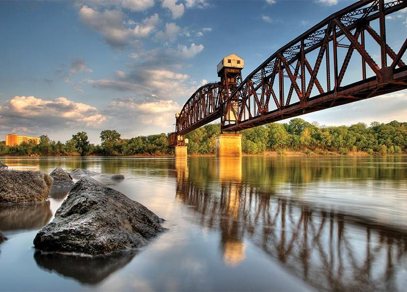

Trek Genie
Discover your travel destiny
Simply fill out the fields below and our Trek Genie will reveal your travel prophesy.
Berlin, Germany

Since the fall of the Berlin Wall in 1989, the German capital has reinvented itself as a leading European arts venue, with superlative new architecture, cutting-edge exhibits, and high-end art galleries. That said, it’s not all about the new here. One of the many shining examples of Berlin’s fervent dedication to the arts is Museumsinsel (Museum Island), a complex of five museums on the site of an original city settlement. This UNESCO World Heritage arts center features the Alte Nationalgalerie (Old National Gallery), celebrated for its German and French Impressionist paintings, plus works by celebrated German artists like Karl Friedrich Schinkel, Max Lieberman, and Berlin’s own Adolph von Menzel. The island plays host, as well, to the Altes Museum (Old Museum), dedicated to antiquities from Rome and Greece, and the Pergamonmuseumm, named after the fascinating 180 BC Greek temple it houses. If that hasn’t quenched your art thirst, another cluster of four museums is found at the Dahlem Museum, where exotic art and artifacts from India, Asia, Africa, and the South Seas, as well Native American and Early European cultures, are showcased.
Boonville, Missouri
Settled by sons of Daniel Boone, who established their salt business nearby, Boonville is home to hundreds of historic locations—from 2,000-year-old Native American burial grounds to the 1860s Rivercene Mansion, built by a wealthy riverboat captain and now a graceful bed and breakfast. There are also sites associated with the Sante Fe Trail, the Civil War and Jesse James, not to mention the Katy Trail—the former Missouri-Kansas-Texas Railroad converted into the nation's largest rails-to-trails project, which celebrates its 25th anniversary this year. 2015 also sees the 40th anniversary of the Missouri River Festival of the Arts, held August 27-29 at Thespian Hall, the oldest theatre still in use west of the Allegheny Mountains and a former Civil War hospital. One of the nation's most extensive collections of antique Mitchell cars and wagons also just opened up at the Mitchell Antique Motorcar Museum, while a little further out of town, you can meet the Budweiser Clydesdales at their 300-acre breeding facility, Warm Springs Ranch.
Wind River, Wyoming
In a range renowned for its incredible peaks-to-people ratio, we’ve scouted the loneliest route of all, in a swath of wild country where lakes sparkle in deep, granite-walled valleys hard up against the rock and ice of the Continental Divide. Begin a loop of 50 miles from Meadow Lake trailhead, south of Pinedale on the west side of the Winds. It’s a hard 12 miles and 2,500 feet to Timico Lake, but the camping is “epic 360-blue-sky-and-toothy-peaks stuff,” says our well-traveled Editor-in-Chief. It’s also a grand introduction because “there are easily a half-dozen views that rank among my lifetime top 50.” From Timico on day two, follow an unofficial use trail two miles to the Divide at 11,280-foot Fall Creek Pass and continue four miles cross-country to Camp Lake—despite the name, don’t camp there. Continue a bit more than a mile to a more ideal site in the 11,000-foot-high, glacially carved valley of the Alpine Lakes, flanked by soaring peaks. From here, dayhike six miles to Alpine Lakes Pass overlooking the Knifepoint Glacier. Return to the trailhead via 10,960-foot Hay Pass and the CDT. Local knowledge Hike in early fall to avoid mosquitoes, but don’t dally. Elk season opens the third week of September, and hunters’ pack trains arrive as much as a week in advance to set up backcountry camps. Just prior to that, you’ll find peak autumn color and ideal weather before the trails become horse-crap-clodded. - See more at: http://www.backpacker.com/trips/wyoming/america-s-best-kept-secrets-wind-river-range-wy/#sthash.eBkFrhrN.dpuf